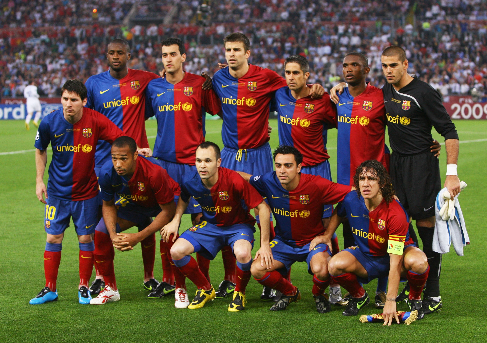
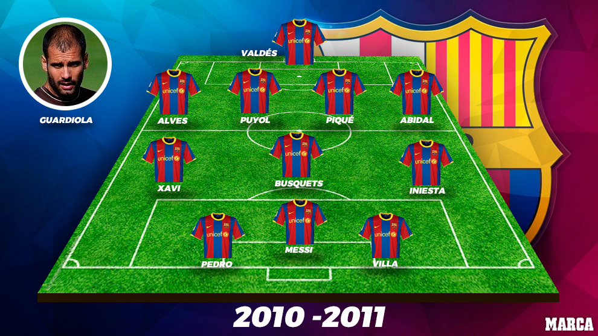
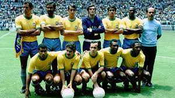
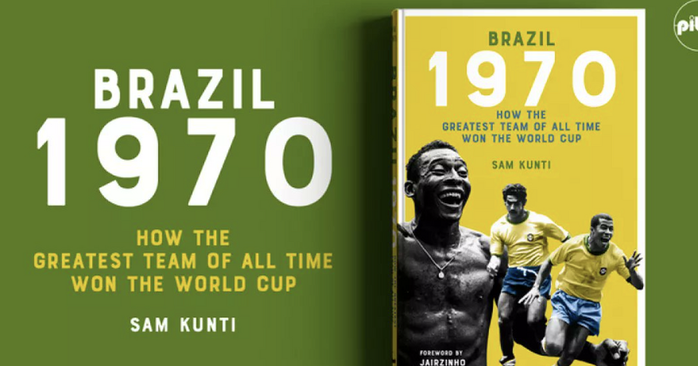
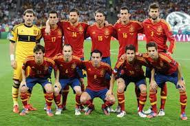
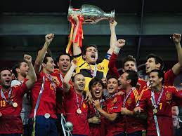
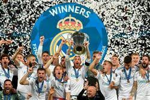
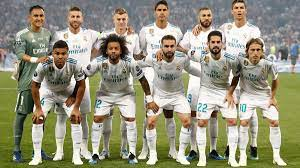
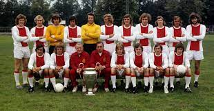
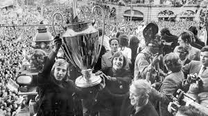

GOAT Teams
Here I post best teams of all times(my mind)
Below I'll place some links to another top where you can find your team
1. Barcelona 2008-2012
This team was the best in the world for 4 years. They won 2 Champions League, 3 La Liga, 2 Copa del Rey, 2 UEFA Super Cup, 2 FIFA Club World Cup. They played the best football in the world. They had the best players, coach in the world. Always when i watch how they play I'm in shock how it possible and no team make same effect at me like they


Best players: Messi, Havi, Iniesta, Puyol, Eto, Villa etc
Coach: Pep Guardiola
2. Brazil 1970
First of all this team has peak Pele. This team represented the romantic ideal of football, the entertaining epitome of “You score four, we’ll score five”.


Best players:Pele, Rivaldo, Tostao, Jairzinho etc
Coach: Mario Zagallo
3. Spain 2007-2012
This team was the best in the world for long time. To start with they won 3 throphy in a row(Worldd cup and 2 Euro). They consist peak Barca and not bad Real player. This team was unbeliaveble


Best players: Villa, Cassilias, Havi, Iniesta etc
Coach: Vicente del Bosque
4. Real 2016-2018
This team won 3 UCL in a row, and they maybe must be in a first place. But i saw their games, thats not game of all-time best team. Football it's not only about result


Best players: Ronaldo, Marcelo, Ramos, Kross, Modric etc
Coach: Zinadin Zidane
5. AJAX 1965-1973
Club's trademark 4-3-3, chaotic position switching and teamwork was established. Over 40 years since their pinnacle - a 1-0 win against Juventus to secure the 1973 European Cup, their third in a row - Ajax's 4-3-3 remains football's most flexible formation. But it's the way they made you feel - the long hair, rock star swagger and beautiful play - that sets them apart.


Best players: Johan Cruyff, Johan Neeskens, Arie Haan, Gerrie Muhren, Velibor Vasovic etc
Coach: Rinus Michels
Also so powerful were: Dynamo Kyiv 1985-1987, Milan 1987-1991, Liverpool 1975-1984, Inter 1962-1967, Hungary 1950-1956, Manchester United 1995-2001
Another tops: